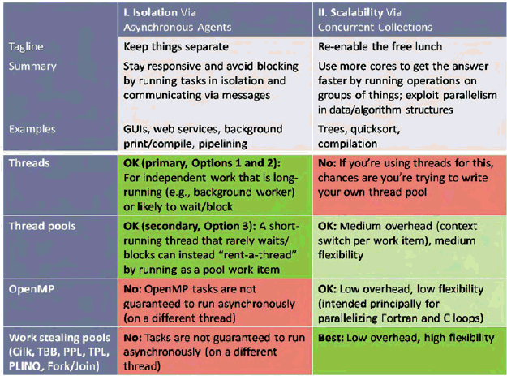

Dr. Dobb's Digest March 2009
Explicit threads are undisciplined. They need some structure to keep them in line. In this column, we're going to see what that structure is, as we motivate and illustrate best practices for using threads -- techniques that will make our concurrent code easier to write correctly and to reason about with confidence.
In [1], I described the three pillars of concurrency. The first two pillars summarize the two main kinds of concurrency we need to be able to express: 1. Keep things separate, so that independent parts of the program can run asynchronously. 2. Use more cores to get the answer faster using data-parallel and similar techniques. (The third pillar is about controlling concurrency once it has been expressed, using tools like locks and atomics.)
Table 1 summarizes these two pillars, and also summarizes how well each is served by four major tools at our disposal today for expressing concurrency: threads, thread pools, work stealing runtimes, and data-parallel facilities like OpenMP.

Threads are about expressing Pillar 1 only, and this article will focus on that column: How to effectively use today's tools, notably threads and in some cases thread pools, to express independent work. We'll look at Pillar 2 in a future article.)
Here are the key things to know about threads:
// An idealized thread mainline // do { message = queue.Receive(); // this could block (wait) // ... // handle the message // ... } while( !done ); // check for exit
Ideally, each thread's logic should be built around the model of servicing its message queue, whether a simple FIFO queue or a priority queue (the latter if some messages should be given priority even if they arrive later).
A final note: In some cases, a thread that is short-running and will not block (wait idly for other events, including inbound messages or locks) can be expressed instead as a thread pool work item for efficiency, to avoid the overhead of creating a new thread from scratch. That's the one valid use of a thread pool for Pillar 1.
GUI threads are a classic example of message pump-driven code. A GUI program is driven by queued events coming in from the user or elsewhere, and its code is organized as a set of responders providing the right thing to do in response to anything from the user pressing a button (e.g., Save, Print, search and replace) to a system event (e.g., window repaint, timer pulse, file system change notification). Many GUI systems offer priority queueing that lets later messages execute sooner even if other messages in the queue arrived earlier (e.g., SendMessage vs. PostMessage on Windows).
Consider the following simplified GUI pseudocode:
// Example 1: Sample synchronous GUI // (not recommended) // while( message = queue.Receive() ) { // this could block if( it's a "save document" request ) { TurnSavingIconOn(); SaveDocument(); // bad: synchronous call TurnSavingIconOff(); } else if( it's a "print document" request ) { TurnPrintingIconOn(); PrintDocument(); // bad: synchronous call TurnPrintingIconOff(); } else ... }
Running nontrivial work synchronously on the GUI thread like this is a classic mistake, because GUIs are supposed to be responsive, and to be responsive requires not just responding to events but responding to them quickly. What if the GUI thread is busy processing a PrintDocument for several seconds, and in the meantime the user tries to resize or move the window? The resize or move request will be dutifully enqueued as a message that waits to be processed in its turn once the printing is complete; but in the meantime the user sees no effect and may try the same action, or give up and try something else instead, only to have all of the potentially duplicated or contradictory commands performed in sequence when the GUI thread is finally able to service them -- often with unintended effects. Synchronous execution leads to poor responsiveness and a poor user experience.
Threads that must be responsive should never execute high-latency work directly. This includes not just work that may take a lot of processing time, but also work that might have to wait for another thread, process, or computer -- including communications or trying to acquire a lock.
There are three major ways we can run high-latency work synchronously to move it off a thread that needs to stay responsive. Using the GUI thread as a case in point, let's examine them in turn and consider when each one is appropriate.
Our first option for moving work off the GUI thread is to execute it instead on a dedicated background worker thread. Because there is exactly one background worker for all the GUI-related grunt work, one potentially desirable effect is that the background work will be processed sequentially, one item at a time. This can be a good thing when two pieces of work would conflict (e.g., want to use the same mutable data) and so benefit from running sequentially; it can be a drawback when earlier tasks block later tasks that could have run sooner independently (see Option 2 below). Note also that messages don't have to go only one way: The asynchronous work can send back notifications ranging from a simple "I'm done" to intermediate information like progress status.
Figure 1 shows an example of this arrangement, where the user presses Print (dark blue) and then Save (light blue), and the two pieces of work are delegated to the worker where they can run asynchronously while the user continues to perform other operations such as moving windows or editing text (gray).
Let's consider two common ways to express the code for this option. First, we can arrange for the GUI thread to send tags representing the work that needs to be done:
// Option 1(a): Queueing work tags for a dedicated // background thread. Suitable where tasks need // to run sequentially with respect to each other (note // corollary: an earlier task can block later tasks).
// GUI thread // while( message = queue.Receive() ) { // this could block if( it's a "save document" request ) { TurnSavingIconOn(); worker.Send( new SaveMsg() ); // send async request } else if( it's a "save document" completion notification ) { TurnSavingIconOff();// receive async // notification } else if( it's a "print document" request ) { TurnPrintingStatusOn(); worker.Send( new PrintMsg() ); // send async request } else if( it's a "print document" progress notification ) { if( percent < 100 ) // receive async // notification DisplayPrintPercentComplete( percent ); else TurnPrintingStatusOff(); } else ... } // Dedicated worker thread: Just interprets // the tags on its queue and performs the // appropriate action for each tag. // while( message = workqueue.Receive() ) {// this could block if( it's a "save document" request ) SaveDocument(); // now sends completion // notification else if( it's a "print document" request ) PrintDocument(); // now sends progress // notifications else ... // etc., and check for // termination }
Alternatively, instead of sending tags we can send executable messages, such as Java runnable objects, C++ function objects or lambdas, C# delegates or lambda expressions, or even C function pointers. This helps simplify the worker thread mainline:
// Option 1(b): Queueing runnable work for a dedicated // background thread. Suitable where tasks need // to run serially with respect to each other (note // corollary: an earlier task can block later tasks).
// GUI thread // while( message = queue.Receive() ) { // this could block if( it's a "save document" request ) { TurnSavingIconOn(); worker.Send( [] { SaveDocument(); } ); // send async work } else if( it's a "print document" request ) { TurnPrintingStatusOn(); worker.Send( [] { PrintDocument(); } ); // send async work } else if( it's a "save document" notification ) { ... } // as before else if( it's a "print document" progress notification ) { ... } // as before else ... } // Simplified dedicated worker thread: // Just executes the work it's being given. // while( message = workqueue.Receive() ) { // this could block message(); // execute the given // work ... // check for // termination }
Our second option is a variant of the first: Instead of having only one dedicated background worker, we can choose to launch each piece of asynchronous work as its own new thread. This makes sense when the work items really are independent and won't interfere with each other, though it can mean that work that is launched later can finish earlier, as illustrated in Figure 2.
Here's sample code that sketches how we can write this option, where red code again highlights the code that is different from the previous example.
// Option 2: Launching a new background thread // for each task. Suitable where tasks don't need // to run sequentially with respect to each other. // while( message = queue.Receive() ) { // this could block if( it's a "save document" request ) { TurnSavingIconOn(); ... new Thread( [] { SaveDocument(); } ); // run async request } else if( it's a "print document" request ) { TurnPrintingStatusOn(); new Thread( [] { PrintDocument(); } );// run async request } else if( it's a "save document" notification ) { ... } // as before else if( it's a "print document" progress notification ) { ... } // as before else ... }
The ellipsis before new Thread stands for any housekeeping we might do to keep track of the threads. In languages with garbage collection we would normally just launch a new Thread and let it go; otherwise, without garbage collection we might maintain a list of launched threads and clean them up periodically.
Thread pools are about expressing independent work that will get run on a set of threads whose number is automatically chosen to match the number of cores available on the machine. Pools are mainly intended to enable scalability (Pillar 2), but can sometimes also be used for running what would otherwise be short threads.
Figure 3 shows how a short-running thread that rarely waits/blocks can instead "rent-a-thread" to run as a pool work item. Again, this technique is for simple one-shot work only, and it's very important not to run work on a thread pool if the work could block, such as wait to acquire a mutex or wait to receive a message (sending out messages is okay because that doesn't block).
Here's some sample code, which again should be considered pseudocode given that the specific spelling of "run this work on that pool" varies from one language and operating system to another:
// Option 3: Launching each task in a thread pool. // Suitable for one-shot independent tasks that // don't block for locks or communication. // while( message = queue.Receive() ) { // this could block if( it's a "save document" request ) { TurnSavingIconOn(); pool.run( [] { SaveDocument(); } ); // async call } else if( it's a "print document" request ) { TurnPrintingStatusOn(); pool.run( [] { PrintDocument(); } ); // async call } else if( it's a "save document" notification ) { ... } // as before else if( it's a "print document" progress notification ) { ... } // as before else ... }
Table 1 shows two other tools that are available (or becoming available) to express potentially asynchronous work, but for a different purpose:
I mention these tools here primarily to say that they're meant for Pillar 2, as Table 1 shows. They're all about different ways to split and subdivide work across available cores to get the answer faster on machines having more cores, from doing loop iterations in parallel, to working on subranges of the data in parallel, to performing recursive decomposition (divide-and-conquer algorithms) in parallel.
These are not the right tools for Pillar 1, which means that they neither compete with threads nor replace them. The reason that work-stealing runtimes and OpenMP are unsuitable for running work asynchronously is because the work is not guaranteed to actually run off the original thread -- i.e., it's not guaranteed to be asynchronous at all.
For completeness, though, here's a taste of the syntax:
// Option 4 (NOT recommended for PrintDocument): // Run on a work stealing or OpenMP runtime. // Using Visual C++ 2010 Parallel Patterns Library (PPL) // with the convenience of ISO C++0x lambdas // taskgroup.run( [] { PrintDocument(); } ); // Using .NET 4.0 Task Parallel Library (TPL) // with the convenience of C# lambdas // Parallel.Invoke( () => { PrintDocument(); } ); // Using Java 7 ForkJoin with an explicit runnable object // class PrintTask extends ForkJoinTask { public void run() { PrintDocument(); } ... } ... fjpool.execute( new PrintTask(); );
OpenMP is not based on work stealing, but does offer a similar construct with the same caveat:
// Using OpenMP (again, NOT recommended for PrintDocument) // #pragma omp task { PrintDocument(); }
Another classic example of event-driven code is client-server communications. A server listens for incoming connection requests; as each connection arrives, the server has to accept it and then process inbound and outbound traffic on that connection until the connection is closed by one side or the other. At any given time, the server has to be able to deal with multiple active connections from different clients, each at a different stage in its processing.
As with the previous GUI example, we have the option of handling the work synchronously or asynchronously. The synchronous code looks something like this in a classic socket-oriented API. The methods are spelled a little differently in POSIX, Java, and other environments, but all follow the basic operation.
// Example 2: Doing it all on one thread/process // (pseudocode, and assumes select returns single events) // while( /*... */ ) { select( our socket list ); // blocks until something is ready if( a connection request came in ) accept() and add it into to our socket list else if( a connection closed ) close() and remove it from our socket list else if( one of our read sockets is ready ) // synchronous processing read more data from that socket and process it else if( one of our write sockets is ready ) // synchronous processing write the next chunk of data to that socket }
A key problem with this is that all the work is being handled by a single thread. For one thing, that tends to make the code more complex; one thread has to do it all, so all the code to handle all the different kinds of clients appears in one place. For another, running all the work on one thread means that all the work will run sequentially on one core (or, equivalently, one core at a time if the operating system migrates the thread from core to core). If the total work saturates the core, then additional work will be throttled and slow down the server's responsiveness for all clients as later requests queue up and wait for earlier work to complete.
A common solution is to use Option 2: Let the server service connections simultaneously by launching a new thread to handle each incoming client. Here's the basic logic:
// Applying Option 2 (pseudocode) // Listener thread: Only accepts connections // and launches new threads to deal with them //
while( /**/ ) { wait for connection request accept() ... = new Thread( [] { HandleIt( theConnection) ); } ); } // Each handler thread // void HandleIt( ... ) { while( wait for event on this connection ) { // this could block if( this connection was closed ) { close() return; } else if( incoming data ready to read ) // synchronous processing read more data from this connection and process it else if( connection is ready to write ) // synchronous processing write the next chunk of data to this connection }
This code is both clearer and potentially faster. The program is clearer because the code to handle each kind of client is nicely wrapped up in its own method or class, instead of being intermingled. The program is faster because it keeps different connections asynchronous and independent, so that the work on one connection doesn't have to wait to be processed sequentially behind work on another connection. This gives better responsiveness even on a single-core server that isn't heavily loaded, and it delivers better scalability under load on servers that do have parallel hardware.
A third classic example of independent work that should run asynchronously is pipelining, and the independent pieces of work are the pipeline stages. In a nutshell, here's the idea: We have a series of pieces of data to be processed in order (e.g., series of packets to prepare for sending). Each piece has to go through several stages of processing (e.g., decorate, compress, encrypt) that need to be applied to a given piece of data in order.
The stages are otherwise independent (e.g., the compressor can run independently of the decorator and encryptor), other than waiting for available work to arrive from the previous stage. As shown in Figure 4, we can express the pipeline with one thread per stage, connected by asynchronous message queues to let the stages run independently and tolerate latency as the different stages typically run at different speeds. Each stage just takes each incoming packet from the previous stage, does its own processing, and throws it over to the next stage.
[1] H. Sutter. "The Pillars of Concurrency" (Dr. Dobb's Journal, August 2007). http://www.ddj.com/architect/200001985.
[2] E. Lee. "The Problem with Threads" (EECS Department Technical Report, University of California, Berkeley, 2006). http://www.eecs.berkeley.edu/Pubs/TechRpts/2006/EECS-2006-1.html.
[3] The Cilk Project website: http://supertech.csail.mit.edu/cilk/.
[4] Intel Threading Building Blocks website: http://www.threadingbuildingblocks.org/.
[5] K. Kerr. "Visual C++ 2010 and the Parallel Patterns Library (MSDN Magazine, February 2009). http:// msdn.microsoft.com/en-us/magazine/dd434652.aspx.
[6] D. Leijen and J. Hall. "Optimize Managed Code For Multi-Core Machines" (MSDN Magazine, October 2007). http://msdn.microsoft.com/en-us/magazine/cc163340.aspx.
[7] J. Duffy and E. Essey. "Running Queries On Multi-Core Processors" (MSDN Magazine, October 2007). http://msdn.microsoft.com/en-us/magazine/cc163329.aspx.
[8] D. Lea. "Package jsr166y" (Draft JSR166y documentation). http://gee.cs.oswego.edu/dl/jsr166/dist/jsr166ydocs/.
[9] OpenMP Application Program Interface Version 3.0 (OpenMP.org, May 2008). http://www.openmp.org/mp-documents/spec30.pdf.